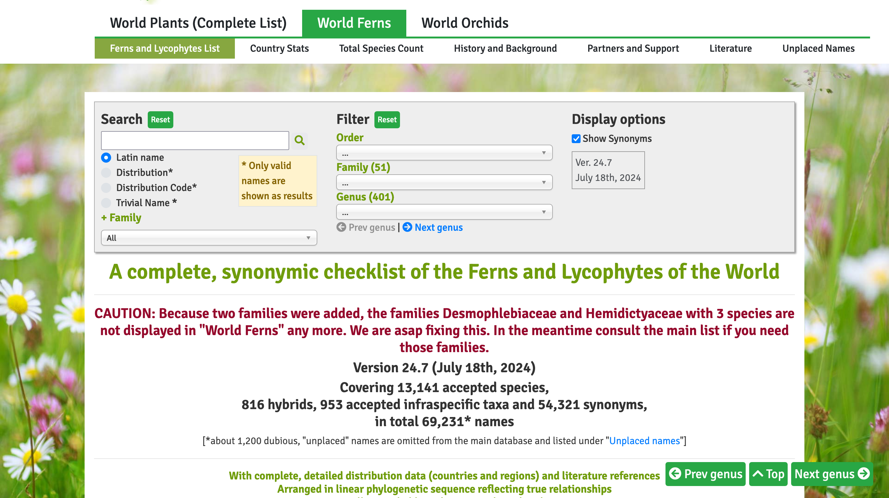

Error: check_taxon_id failed
taxonID detected with duplicated value
Bad taxonID: 54126747, 54135528, 54135530, 54135531, 54126748, 54126749PPG Workshop at IBC 2024
Joel H. Nitta
Outline: PPG Phase II
- World Ferns
- Darwin Core (DwC)
PPG EditorWFO and Rhakhis- Beyond Phase II
PPG Phase II
PPG Phase II
We have been working on Phase I (genus level and higher)
During Phase II, we will develop the species-level taxonomy
We will officially start on Phase II after publishing PPG II at the genus level and higher (ca. Winter 2024)
Decision making process for PPG Phase II
No community-wide voting (too many names!)
Instead, establish committees for smaller groups (genera, families)
- Need to consider how regional specialists fit into this model
Committees will edit the data directly*
Data for Phase II
There are more than 12,000 accepted species and 50,000 synonyms
Compiling these data is a huge task!
Fortunately, there is an existing database that we can use…
World Ferns
World Ferns (WF)
- Taxonomic database for ferns and lycophytes maintained by Michael Hassler since 1994
- 69,231 names total*
- 13,141 accepted species
- 816 hybrids
- 953 accepted infraspecific taxa
- 54,321 synonyms
https://www.worldplants.de/world-ferns/ferns-and-lycophytes-list
Usage of World Ferns
- The World Ferns database is very valuable because of its comprehensive treatment of synonyms
- Used by
- Catalog of Life
- Pteridoportal
- GBIF (via Catalog of Life)
Taxonomic treatment of WF
- Mostly follows PPG I (2016)
- But there have been many changes since
- Maintained by MH, so all taxonomic decisions are his
- We hope to ease the burden of maintaining a database of >60,000 names by working as a community
Database format of WF
- A custom format using Microsoft Word
- MH has kindly provided us with an exported version of the data (Excel spreadsheet)
- We (PPG) are allowed to use World Ferns data under the CC BY 4.0 license*
- I wrote custom R code to convert the World Ferns data to Darwin Core (DwC) format: https://github.com/pteridogroup/ppg-import
Darwin Core (DwC)
What is Darwin Core (DwC)?
- A standard for taxonomic data
- Actually part of a broader standard for biodiversity data (specimens, taxonomy, other collection metadata)
- More info: https://dwc.tdwg.org/

What is a “standard”?
- Provides specifications for how to format the data
- Column names
- What goes in each column
- Example:
scientificName
PPG uses DwC
- The PPG database is a single datatable (a spreadsheet) in CSV (comma-separated values) format that conforms to DwC
Why should we use a standard?
Facilitates sharing of data between databases
Databases that use DwC
- GBIF
- Catalog of Life
- many others…
DwC helps us organize data
- We can have expectations about how the data are organized
- Synonyms should map to accepted names
- Lower taxonomic levels should map to higher ones
- We can validate our data to make sure they meet the expectations (more on that soon…)
An R package to maintain and validate DwC
I developed the
dwctaxonR package to help maintain and validate DwCHandling taxonomic changes is not straightforward, especially when synonyms are involved

Changing taxonomy is complicated
Old version:
- Accepted species 1: Cephalomanes crassum
- Synonym: Trichomanes crassum
- Accepted species 2: Cephalomanes densinervium
- Synonym: Trichomanes densinervium
New version (C. crassum → synonym of C. densinervium):
- Accepted species: Cephalomanes densinervium
- Synonym 1: Cephalomanes crassum
- Synonym 2: Trichomanes crassum
- Synonym 3: Trichomanes densinervium
dwctaxon can account for all synonyms
It is better to detect mistakes early
- There are many possible mistakes with taxonomic data
- Misspelled names
- Incorrect accepted name of a synonym
- non-standard taxonomic status or rank, etc…
dwctaxon automates validation of taxonomic data
- I use
dwctaxonto help edit the data from World Ferns to implement the changes we’ve voted on so far - This is helps us maintain a high-quality taxonomic database with minimal manual intervention
PPG Editor WFO and Rhakhis
PPG II requires a new approach
- PPG I used Google Sheets
- This was OK for a small number of names (genus and above)…
- But PPG II (Phase II, at species level) will include >60,000 names
- We can’t handle all of these with a single Google Sheet
Solution: a web app for editing names
By using a web app, PPG members can simultaneously edit the database while minimizing data entry errors
I had been developing a custom web app called
ppg-editor…
- But then I realized that the Rhakhis tool of World Flora Online could work just as well (better?) and that it is probably a better option (they have a professional software development staff, I am just doing what I can as a researcher who happens to know some R)
About World Flora Online (WFO)
A taxonomic system for all vascular plants and bryophytes
Each group maintained by a Taxonomic Expert Network (TEN)
PPG is a TEN
https://about.worldfloraonline.org/tens/pteridophyte-phylogeny-group

PPG and WFO
We have not yet provided our data to WFO
We plan to submit PPG II data as soon as it is ready (Fall/Winter 2024?)
Rhakhis
- WFO maintains a webb app to edit taxonomic data in the WFO database called “Rhakhis”
Greek form of rachis, the ‘backbone’ of a leaf or inflorescence
Rhakhis
- We will use Rhakhis for Phase II (the species-level taxonomy)
Using Rhakhis
- Anybody can log in using their ORCID ID
- I can help get you set up with one today if you don’t have it yet
- In order to edit data, you need to be given permission for a particular group (likely genus or family)
- We will be setting this up soon
Using Rhakhis
- There are two versions of Rhakhis
- The “normal” editor
- The “sandbox” editor
- They are identical, except that any changes made in the “sandbox” will be erased overnight (it is for testing only)
Using Rhakhis
I can demo using Rhakhis with the Sandbox version
You can log in with your ORCID and browse the data, but not edit anything (yet)
Check the user manual
Beyond Phase II: Integrating PPG and FTOL
- Work on a complete, species-level fern tree (FTOL v2) is in early stages
- current FTOL (v1.6.0): 5,785 species = ca. 50%
- The ultimate goal is to have a unified, species-level database including the taxonomy and tree
Beyond Phase II: Integrating PPG and FTOL
- We (organizers of PPG and GoFLAG) are planning a similar project to GoFLAG to complete FTOL
- Taxonomic experts can submit tissue samples and have priority access to resulting data
- We hope that collaboration with all PPG members will result in a complete FTOL!